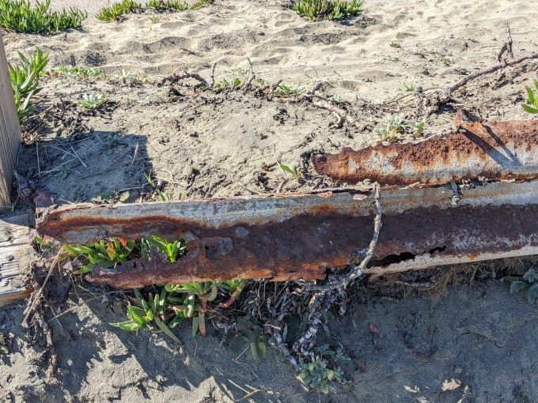
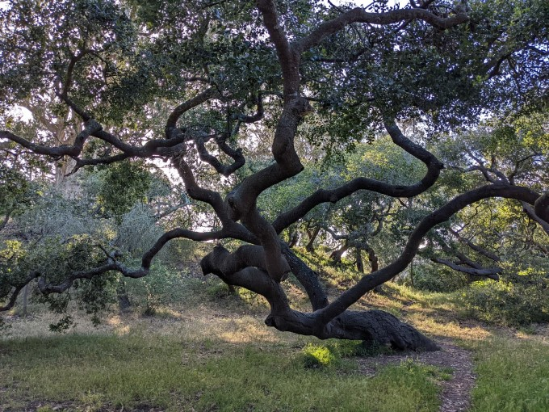

The Bones of the City
Cities are most often written about by princes. The princes of the city think it is something that can be tamed, like a farmer who owns a cow and fattens it up for the slaughter. The city feeds on its surroundings, and grows fatter, and the princes lick their lips. They place their crown on the city's coins and the city's flag, but they will never be the city. They will never even own the city. They will fight and kill over it, and when they are gone the city will still be there. When one day the city dies, their names will be forgotten and the city will haunt the land until the last tower falls into ruin.
A city is a wild thing, uncontrollable. A massive chaotic entity that teems with boundless life; building, dreaming, plotting, loving and killing. But that's a subject for another post. Today I'm going to talk about a city's bones.
There are places in the city that are still wild. A hill too rocky, a ravine too deep to build on, where the birds and the wildflowers come in spring. Some of these wild places are hidden. Silt that shifts and hides shipwrecks under the foundations of palaces. Sewers that were once hewn out of stone with strength and steel, and are now lush and green and alive. The wilderness is not outside the city.
The princes believe that a city is an engine for conquering the wilderness. But you cannot conquer the wilderness. The wilderness is in the city's bones.
In the park is a tree whose twisted branches are older than the first stone placed on another stone. Trees kept and cultivated for firewood hide the wild creatures that come out at night. The weeds that grow in the cobblestones are holy - follow them to a gate in an abandoned garden to find a door to the Other World.
One day you look up at a hill and find that it is bright yellow with wildflowers. Instead of walking home you walk to the top and meet a strange laughing man with flowers in his hair who doesn't leave a shadow.
There is a rock on which people write their secret dreams. The lines blend into each other over the millenia; the dreams are not so different from each other.
One evening you walk to the shores of the ocean. You look out and see it stretching from the ships and the docks and the sand beneath your feet to the very ends of the earth. Vast and cold and hungry and indifferent, the mother of all things.
When it rains, the old rivers come to life. The princes tried to straighten the road, and five houses washed away. The road has to wind like that; the bones of the city remember. Everything that happens, hangs on those bones.
People remember where to go to talk to the old gods. On the city map, it looks like a small scar, out of the way of commerce and trade. You might pass by the ravine and never notice it. But when you stand in it, you feel the beating heart of the deep forest. The bones of the city don't know the difference between a city and a wilderness. You cannot defeat them, you cannot even fight them, they simply are there, as eternal as the sun and the sea.